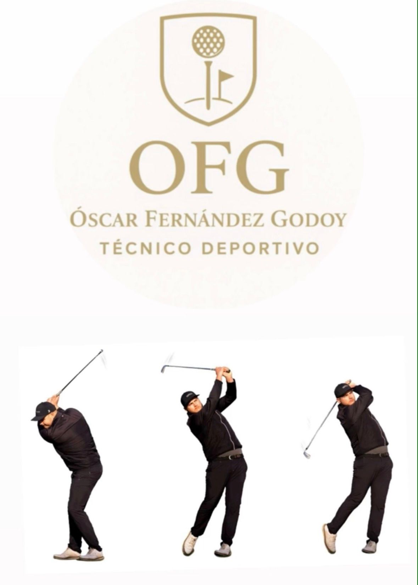

Técnico Profesional de Golf
Soy técnico profesional de golf con experiencia en formación, entrenamiento y desarrollo de jugadores de todos los niveles.
Mi metodología combina un enfoque integral que une el análisis técnico, la preparación física específica y el desarrollo de la estrategia mental en el campo. Cada sesión está diseñada para potenciar tu rendimiento de forma personalizada y sostenible.
⛳ Clases individuales y grupales adaptadas a todos los niveles.
📊 Análisis detallado del swing con herramientas profesionales.
🏌️♂️ Salidas al campo tutorizadas para aplicar lo aprendido en situaciones reales.
🧠 Coaching deportivo y mental enfocado en la toma de decisiones, concentración y confianza.
Como jugador profesional de golf, sé que el rendimiento no es casualidad: es el resultado de precisión, confianza y el mejor equipo en cada golpe.
Por eso trabajo con Cobra, una marca reconocida por su innovación, tecnología y diseño orientado al rendimiento. Ofrezco una selección cuidada de palos, ropa y accesorios pensados tanto para jugadores exigentes como para quienes buscan mejorar su juego con material de alta calidad.
Si buscas distancia, control y consistencia en el campo, estaré encantado de asesorarte personalmente para encontrar el equipo que mejor se adapte a tu estilo de juego.
Además de la formación, también gestiono Gtkaddy, innovación y tecnología para el mundo del golf.